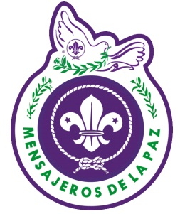

¿Quiénes Participan? ◄ Volver ≡
Se trata de un proyecto de Mensajeros de la Paz creado por Scouts de la Región Interamericana, pero se invita a todo los Scouts del mundo a participar.
Los
participantes no tienen que ser sólo Scouts; familia y amigos pueden
plantar un árbol también, con el compromiso de cuidar el árbol.
Si usted desea participar o tiene alguna pregunta, por favor envíenos un email a treesfortheworld@gmail.com
También no te olvides de visitar nuestra página de Facebook